一、报告背景与核心洞察
1.1 报告背景
CS2饰品交易市场是全球最大的游戏虚拟物品二级市场之一。据csmarketcap.com数据，截至2026年，CS2饰品总市值达71.2亿美元（约510亿人民币），独立持有者约2790万，日均交易额约1.15-1.27亿人民币。
在这一市场中，网易BUFF和悠悠有品是国内最具代表性的两个交易平台。两者同处CS2饰品交易赛道，但在产品定位、商业模式和用户策略上走出了截然不同的道路。
1.2 报告方法论
本报告采用Jesse James Garrett提出的"用户体验五大要素"框架，从战略层到表现层逐层分析两个平台的差异化设计逻辑。
| 分析层次 | 分析维度 | 核心问题 |
|---|
| 战略层 | 产品定位、商业逻辑 | 两者为谁服务？解决什么问题？ |
| 范围层 | 功能范围、内容策略 | 两者分别提供了什么功能？ |
| 结构层 | 信息架构、导航逻辑 | 功能和内容如何组织？ |
| 框架层 | 页面布局、交互设计 | 界面元素如何排列？ |
| 表现层 | 视觉呈现、UI设计 | 用户最终看到什么？ |
1.3 核心洞察
核心结论：BUFF是"证券交易所"模式 — 专业交易市场，服务于对磨损值敏感的专业交易者；悠悠是"共享经济"模式 — 低门槛体验市场，服务于价格敏感的入门级用户。两者代表了同一市场的两种截然不同的产品哲学。
二、战略层分析 — 产品定位、商业逻辑与市场表现
2.1 市场背景
据take.skin《CS2饰品市场2026年Q1研究报告》及csmarketcap.com实时数据：
| 指标 | 数据 | 来源 |
|---|
| 总市值 | 71.2亿美元（约510亿人民币） | csmarketcap.com |
| 历史最高 | 87.1亿美元 | csmarketcap.com |
| 饰品总库存 | 约9.756亿件 | take.skin |
| 独立持有者 | 约2790万 | take.skin |
| 日均交易量 | 约323万件 | take.skin |
| 日均交易额 | 约1.15-1.27亿人民币 | take.skin |
数据来源：take.skin《CS2饰品市场2026年Q1研究报告》及csmarketcap.com
市场特征：日均交易额超1亿人民币，2790万独立持有者。这是一个既有投机属性（价格波动大）又有消费属性（玩家购买使用）的混合市场。BUFF和悠悠分别抓住了市场中的两类核心需求：投资交易和体验消费。
2.2 产品定位对比
| 维度 | 网易BUFF | 悠悠有品 |
|---|
| 本质定位 | 饰品交易市场 | 饰品租赁服务平台 |
| 核心价值 | 让买卖更高效、更透明 | 让体验门槛更低、更灵活 |
| 用户目的 | 买到/卖掉一件饰品 | 租到/出租一件饰品 |
| 上线时间 | 2018年5月 | 2020年11月 |
| 开发主体 | 网易公司（上市公司） | 上海熔晟（独立公司） |
定位差异根源：CS2饰品市场存在两类核心需求——"拥有"和"体验"。BUFF满足"拥有需求"（买卖），悠悠满足"体验需求"（租赁）。两者不是直接竞品，而是互补品——同一个CS2玩家可能在BUFF上买皮肤，在悠悠上租皮肤。这种需求分层决定了两者能共存于同一市场而不完全互斥。
2.3 公司背景对比
| 维度 | 网易BUFF | 悠悠有品 |
|---|
| 母公司 | 网易公司（NASDAQ: NTES） | 独立公司，未上市 |
| 员工规模 | 雷火事业群约2000人 | 149人（2025年） |
| 2025年营收 | 网易集团1126亿元 | 未公开 |
| 企业性质 | 上市公司子公司 | 高新技术企业、专精特新 |
| 前身 | 网易集团旗下产品 | 脱胎于UU898游戏服务网（2008年） |
公司背景决定产品策略：网易是大厂，BUFF可以"慢慢建城"——先做交易，再加社区，再加工具，一步步构建生态壁垒；悠悠是创业公司，必须"快速突击"——用免费租获客，用秒到账留存，用会员体系变现。大厂做产品是长期主义，创业公司做产品是生存优先。这解释了为什么BUFF的功能更全面（有社区、有行情、有工具），而悠悠的功能更聚焦（围绕租赁做深做透）。
2.4 市场表现数据
2.4.1 下载量对比
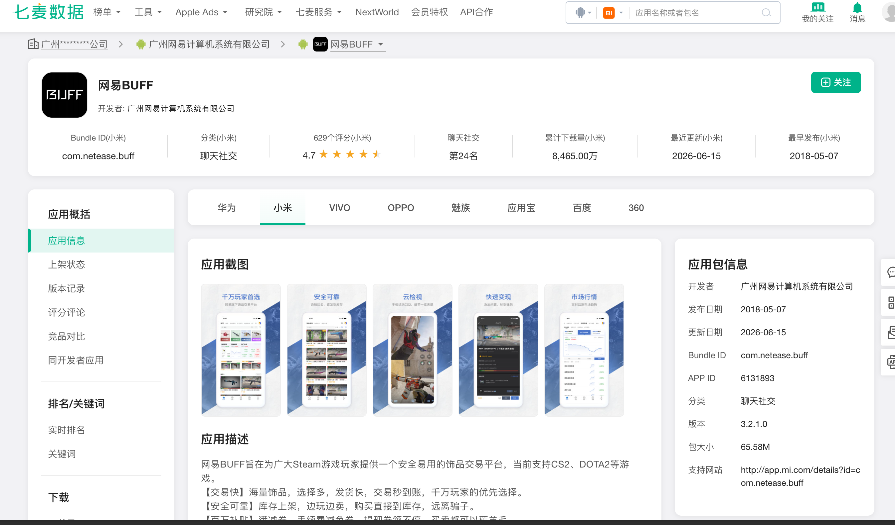
图2-1 小米应用商店BUFF（8465万）
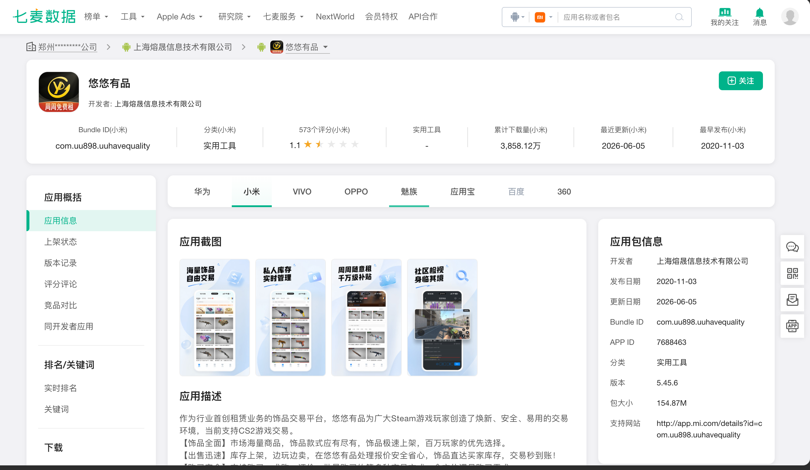
图2-2 小米应用商店悠悠（3858万）
| 渠道 | BUFF | 悠悠 | 倍数 |
|---|
| 小米 | 8465万 | 3858万 | 2.2倍 |
| VIVO | 2086万 | 1004万 | 2.1倍 |
| 应用宝 | 161万 | 29万 | 5.6倍 |
| 合计 | 约1.07亿 | 约4891万 | 2.2倍 |
数据来源：七麦数据、VIVO应用商店、应用宝，截至2026年6月
下载量差异分析：BUFF下载量约为悠悠的2.2倍。这不仅反映了品牌知名度的差距，也反映了两者的用户获取策略差异——BUFF依靠网易品牌背书和内容营销自然获客，悠悠依靠免费租和裂变活动拉新。值得注意的是，BUFF在应用宝的下载量是悠悠的5.6倍，说明BUFF在腾讯生态中的渗透更强。
2.4.2 评分对比
| 渠道 | BUFF | 悠悠 | 差异 |
|---|
| App Store | 4.1分（5.6万评） | 2.2分（21评） | BUFF远高 |
| 小米 | 4.7分（629评） | 1.1分（573评） | BUFF远高 |
| VIVO | 2.6分（1853评） | 1.4分（2237评） | BUFF略高 |
评分差异分析：悠悠在App Store的评分人数仅21人，BUFF有5.6万人——相差2600倍。这不只是评分低的问题，更是用户基数和活跃度的巨大差距。悠悠在小米的评分仅1.1分，意味着几乎每个评价用户都给了差评，这对新用户的转化是致命的——一个潜在用户在应用商店看到1.1分，大概率会放弃下载。
2.4.3 百度搜索指数
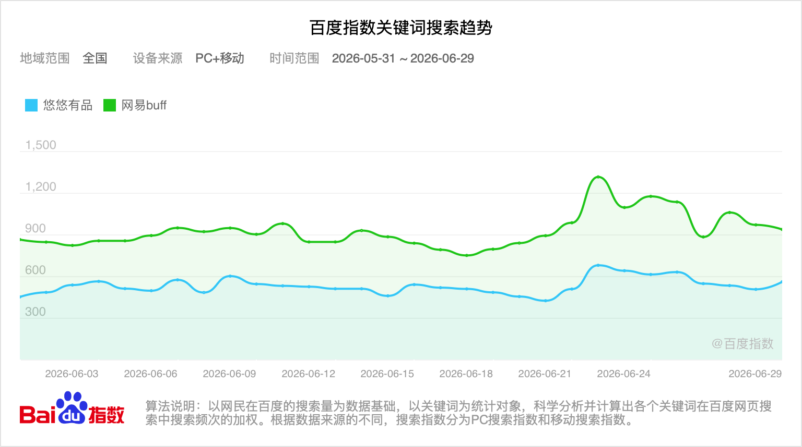
图2-3 百度搜索指数对比（2026.05.31-06.29）
数据来源：百度指数，2026年5月31日-6月29日
搜索指数分析：BUFF日均搜索指数约800-900，悠悠约400-500，BUFF约为悠悠的1.7倍。值得注意的是，两者搜索趋势走势高度一致（都在6月22日左右出现峰值），说明它们受同一市场事件影响（可能是CS2赛事或版本更新）。这印证了我们的核心判断：两者服务的是同一批CS2玩家，只是满足了不同的需求。BUFF的搜索量更高，说明在用户心智中，BUFF=CS2饰品交易的第一联想，悠悠还没有建立起同等的品牌认知。
三、范围层分析 — 功能范围与内容策略
3.1 功能全景对比
| 功能 | 网易BUFF | 悠悠有品 |
|---|
| 购买（一口价） | ✅ | ✅ |
| 出售 | ✅ | ✅ |
| 租赁 | ✅（补充功能） | ✅（核心功能） |
| 求购 | ✅ | ✅ |
| 竞拍 | ✅（急售竞价） | ✅（竞拍+捡漏+亮点） |
| CS2租号 | ❌ | ✅（独有） |
| 免费租 | ❌ | ✅（独有） |
功能权重差异：两者功能高度重叠，但权重完全不同。BUFF将租赁作为补充，悠悠将租赁作为命脉——从免费租（拉新）到租饰品（日常）到CS2租号（高端）到转租/过户（流转），形成完整闭环。商业模型差异：BUFF靠交易抽佣（1.5%手续费），悠悠靠租赁服务费（20-25%）。对BUFF来说，租赁是锦上添花；对悠悠来说，租赁是生命线。
3.2 悠悠独有功能深度分析
（1）CS2租号 — 租整个账号而非单个饰品
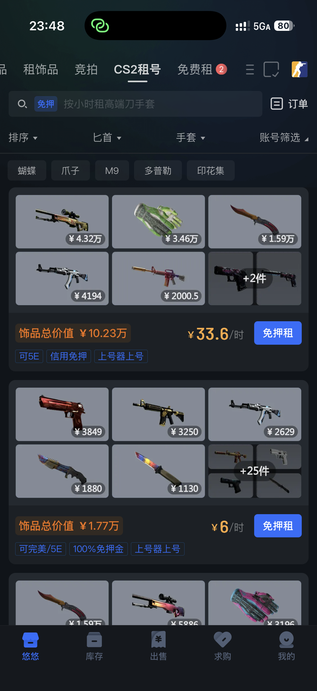
图3-1 悠悠CS2租号（饰品总价值10.23万，33.6元/时）
用户不是租单个饰品，而是租一个装满高端饰品的CS2账号，按小时计费。从截图可见，一个饰品总价值10.23万的账号，租金仅33.6元/时。账号还标注了可5E、信用免押、上号器上号等标签。
深度分析：CS2租号的功能价值有三个层面。第一，它把高端体验的门槛从万元级降到了十元级——一个学生党花33元就能体验价值10万的全套饰品，这是BUFF完全无法提供的。第二，租号用户一旦体验了高端饰品，其中一部分会转化为购买用户——悠悠通过租赁完成了对高端市场的"用户教育"，这是一个从租赁到购买的转化漏斗。第三，租号模式天然绑定了用户的时间和习惯——用过好东西的用户很难回到没有饰品的游戏体验，这种体验落差会驱动付费转化。从竞争角度看，这是BUFF短期内无法复制的功能，因为BUFF的商业模型是卖东西，而租号本质上是在培养未来的买家。
（2）免费租 — 每周1次免费资格
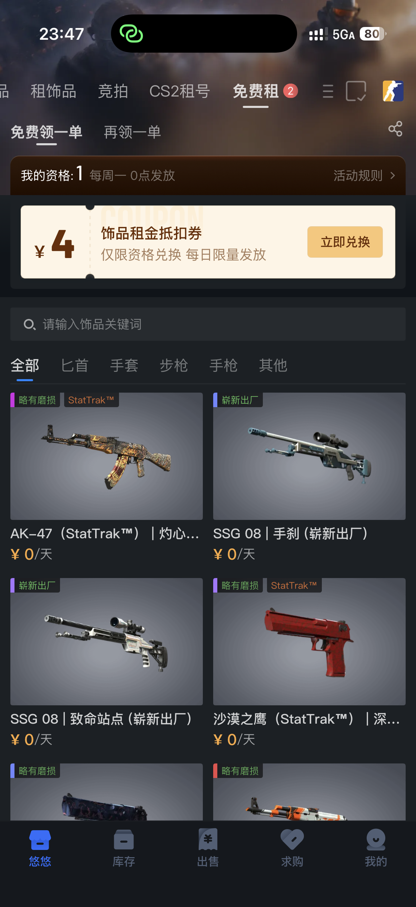
图3-2 悠悠免费租（每周一0点发放资格）
用户每周一获得1次免费租资格，可以零成本租用一件饰品。同时还有4元租金抵扣券可兑换。可租品类包括AK-47、SSG 08、沙漠之鹰等。
深度分析：免费租的本质是"习惯养成"而非"让利"。每周一0点定时发放，让用户形成"周一打开悠悠有品"的固定行为。这和共享单车的"每周免费骑一次"、外卖平台的"每周红包"是同一种增长策略——用低成本的周期性福利培养用户打开APP的习惯。从经济学角度看，免费租的单次成本极低（可能只有几块钱的租金成本），但能持续12个月（52周×1次），而BUFF的163元新人礼包是一次性投入。悠悠的策略ROI更高：每周花几块钱，换来用户一年的打开习惯。一旦习惯养成，从"免费租"到"付费租"的转化路径自然形成。
（3）秒到账三级体系
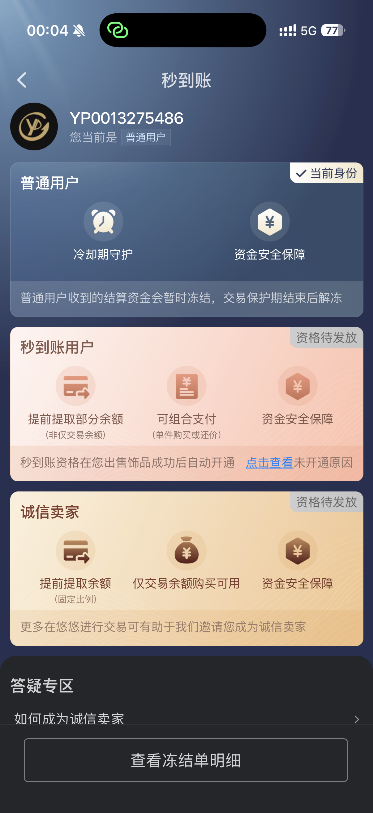
图3-3 悠悠秒到账三级体系
悠悠为卖家设计了三级资金管理体系：普通用户（资金冻结）→ 秒到账用户（可提前使用部分资金）→ 诚信卖家（更高比例提前提取）。开通条件是出售饰品成功后自动升级。
深度分析：秒到账体系的精妙之处在于它用"资金流动性"作为激励杠杆。卖家在悠悠卖得越多、等级越高，资金到账越快——这直接提高了"离开成本"。想象一下，一个V3等级的卖家在悠悠有5000元的待结算资金，如果转去BUFF，这些资金要等好几天才能用。这种"资金锁定"效应比任何会员折扣都更能留住卖家。更深层次看，秒到账体系还在筛选和培育优质卖家——从普通用户到秒到账用户到诚信卖家，每一级都需要在平台上积累足够的交易记录，这实际上是在用机制设计来筛选出高信誉、高频次的卖家，形成一个良性循环。
（4）过户 — 出租中的饰品提前变现
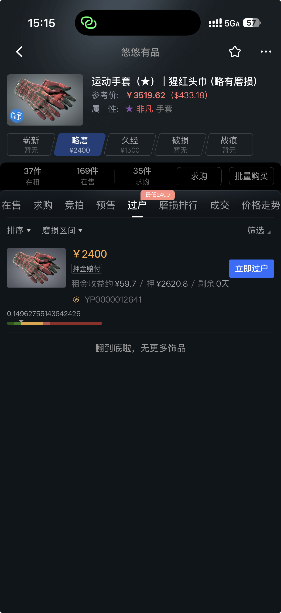
图3-4 悠悠过户页面（运动手套猩红头巾，过户价2400元）
过户是将出租中的饰品上架出售，买方得到饰品加租期内剩余收租权益，卖方更快流转饰品。
深度分析：过户功能解决了租赁生态中的"退出机制"问题。对于出租方，持有饰品的资金被锁定在租赁中，想退出但不想中断租金收入。过户让卖家可以在不中断收益的前提下套现——买方接手后继续出租，卖方获得资金。对于买方，买到的不只是饰品本身，还附带了剩余租期的收租权——相当于买了一个"会下蛋的鸡"，比单纯买饰品多了一层价值。过户和秒到账是配套的——卖家通过过户快速变现，再通过秒到账快速使用资金，形成"租赁→过户→资金回笼→再投资"的完整闭环。这是BUFF没有的功能，也是悠悠租赁生态完整性的又一体现。
3.3 BUFF独有功能深度分析
（1）社区生态
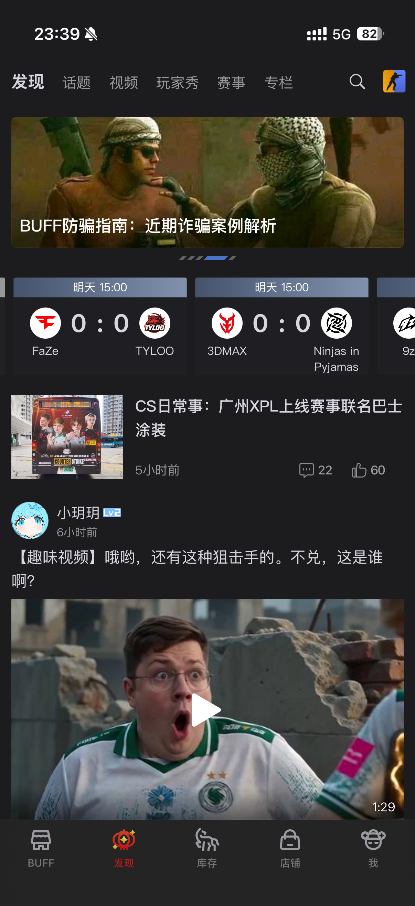
图3-5 BUFF发现页面（话题/视频/玩家秀/赛事/专栏）
BUFF的发现Tab是一个完整的社区平台，包含话题讨论、视频内容、玩家秀（饰品搭配展示）、赛事信息、专栏文章，以及用户等级体系（Lv2）。
深度分析：社区是BUFF最难被复制的护城河，它的价值有三个层面。第一，增加用户停留时间和打开频率——用户不只是来买卖，还会逛社区，这直接提升了APP的日活和留存。第二，形成"内容→交易"转化路径——用户在玩家秀看到好看的饰品搭配，直接点击购买，社区变成了交易的入口。第三，建立品牌认知和用户信任——社区里的官方资讯、防骗指南、赛事报道，让用户觉得BUFF不只是一个交易平台，更是一个"CS2玩家的家"。悠悠没有社区功能，用户"用完即走"，粘性完全依赖免费租和秒到账——这是一个长期隐患。社区的本质是用内容建立情感连接，这是利益驱动型留存无法替代的。
（2）市场行情数据
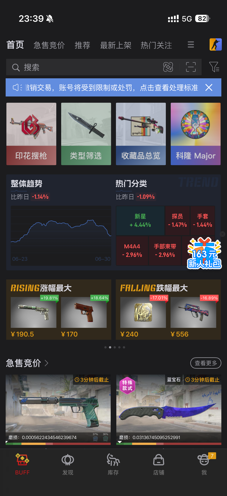
图3-6 BUFF首页市场行情模块
BUFF首页展示了整体趋势（涨跌折线图）、热门分类涨跌、涨幅最大/跌幅最大的饰品。这些数据让BUFF看起来更像一个金融交易平台。
深度分析：行情数据不只是"好看"，它直接服务于BUFF的"投资需求"用户群。很多玩家买饰品不只是为了用，还为了"低买高卖"。BUFF提供行情数据，本质上在说："来这里交易，我能帮你赚钱。"这种定位吸引了大量"饰品炒家"，他们频繁交易，为BUFF贡献了大量手续费收入。悠悠没有行情数据，说明它不打算吸引这群用户——它的用户画像更偏向想体验但预算有限的普通玩家。这种功能取舍体现了两者对目标用户的不同判断：BUFF赌的是高频交易者，悠悠赌的是低频体验者。
3.4 会员体系对比
BUFF Plus会员：
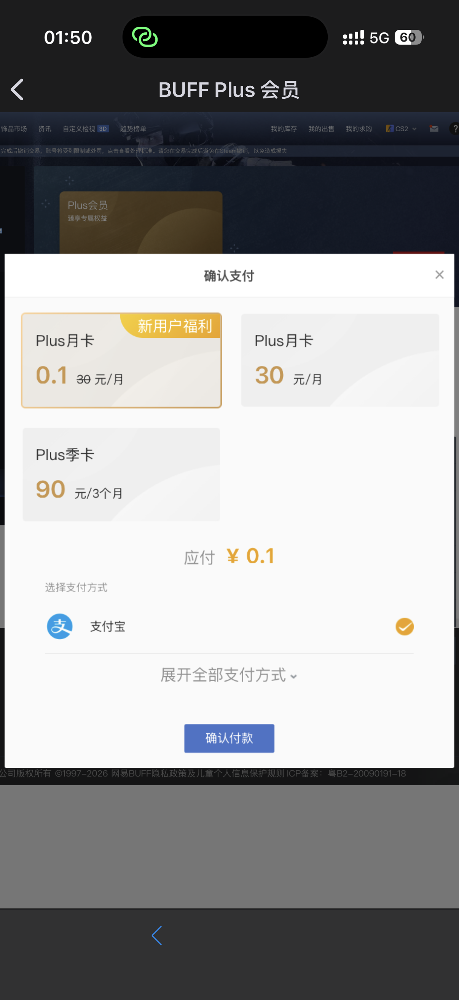
图3-7 BUFF Plus价格
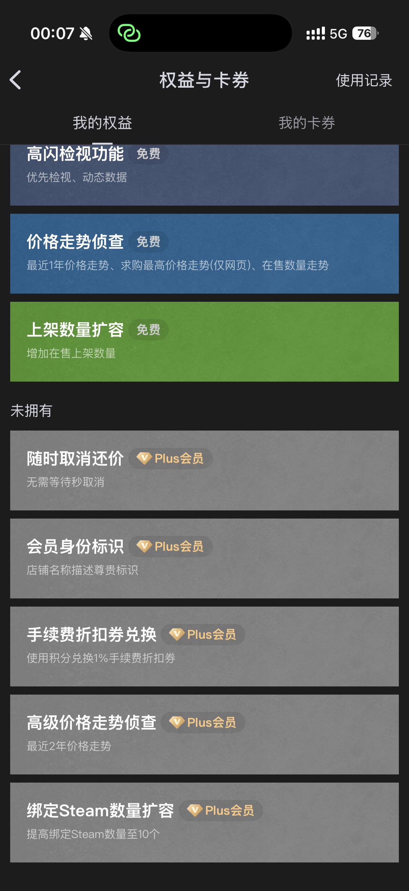
图3-8 BUFF Plus权益
悠悠三套会员：
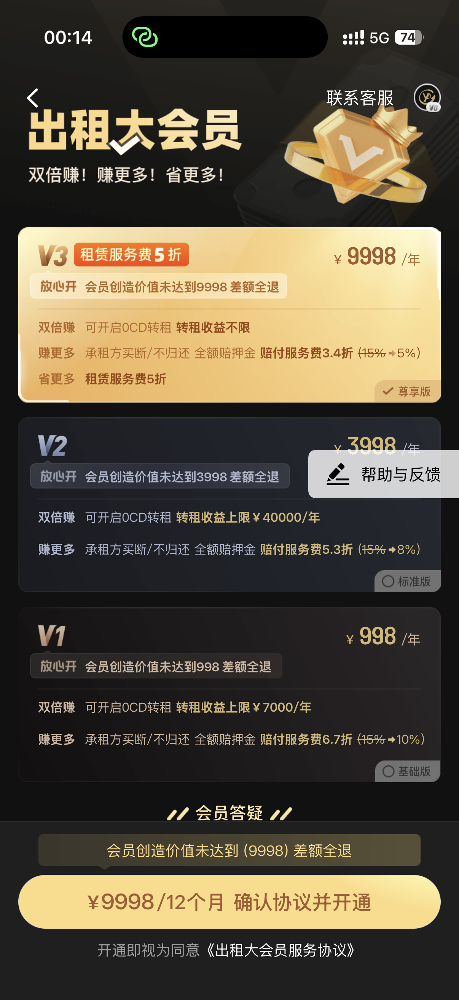
图3-10 出租大会员
会员体系差异分析：BUFF采用单一Plus会员（月卡30元），权益偏向工具型（手续费折扣、数据侦查、身份标识）。悠悠采用三套独立会员：出售大会员（4998元/半年，卖家省手续费）、出租大会员（9998/年，出租方享转租收益）、省钱会员（88/年，租户省租金）。悠悠的模式更精准——每个角色都有专门为自己设计的会员，但也更复杂——用户需要理解"我是卖家还是出租方还是租户"才能选择合适的会员。BUFF的模式更简单但差异化不足。
3.5 手续费结构对比
| 费用类型 | 网易BUFF | 悠悠有品 |
|---|
| 出售手续费 | 1.5%（2026年4月下调） | 1% |
| 买家手续费 | 0% | 0% |
| 提现手续费 | 1% | 1%（每月前2次免） |
| 会员价格 | 0.1-90元 | 88-9998元/年 |
BUFF手续费于2026年4月14日从2.5%下调至1.5%，来源：BUFF官方公告 buff.163.com/news/87397
手续费差异分析：表面看只有0.5%的差距（BUFF 1.5% vs 悠悠 1%），但对高频交易者影响巨大。假设卖家月交易额10万，0.5%的差异就是500元/月、6000元/年。这正是悠悠吸引卖家的核心价格优势。但BUFF在4月下调手续费，说明它已经意识到价格竞争的压力——未来的手续费差距可能会进一步缩小。更值得关注的是提现费：BUFF提现费1%且单笔上限5万元，悠悠也是1%但每月前2次免，这对小额卖家更友好。
四、结构层分析 — 信息架构与导航逻辑
4.1 导航栏分类权重
BUFF：17个分类，16个围绕买卖
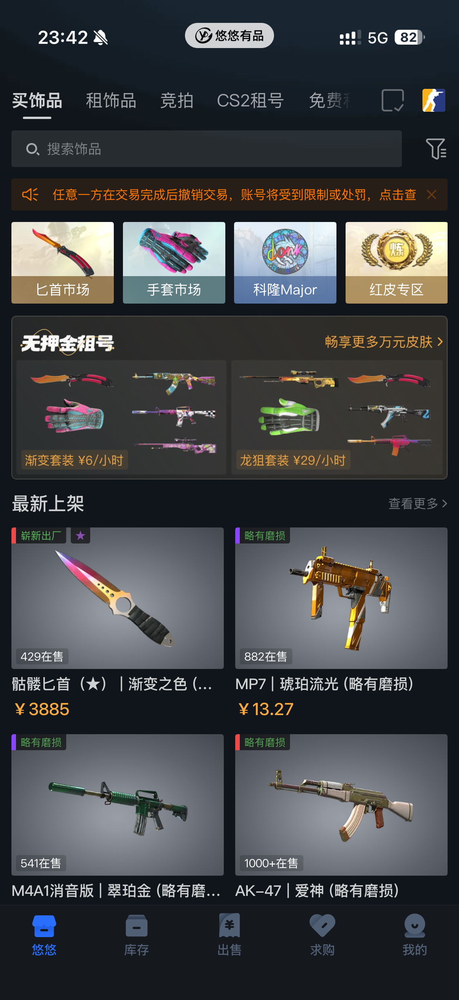
图4-2 悠悠导航栏排序
BUFF的17个分类包括：急售竞价、推荐、最新上架、热门关注、饰品租赁、挂刀推荐、趋势榜单、预售专区、发货保证金、特殊磨损、金贴专区、近期降价、多连贴纸、低磨专区、卡托专区、宝石刀、打包专区。其中仅饰品租赁1个涉及租赁。
悠悠的5个分类：买饰品、租饰品、竞拍、CS2租号、免费租。其中租饰品、CS2租号、免费租3个涉及租赁。
洞察：导航栏分类权重是最诚实的产品定位指标。BUFF用16/17的权重押注买卖，悠悠用3/5的权重押注租赁。这不是偶然的UI选择，而是深层战略意图的直接体现。如果只能看一个指标判断APP的核心定位，看它的导航栏分类就够了。更值得注意的是，悠悠甚至把"免费租"作为导航栏的一级入口——这是一个纯粹的拉新工具，说明悠悠将获客视为最高优先级。
4.2 底部Tab结构
| Tab位置 | BUFF | 悠悠 |
|---|
| 第1个 | BUFF（首页+市场行情） | 悠悠（首页+商品列表） |
| 第2个 | 发现（社区内容） | 库存 |
| 第3个 | 库存 | 出售（含租赁/转租/过户） |
| 第4个 | 店铺（卖家管理） | 求购 |
| 第5个 | 我 | 我 |
洞察：第2个Tab的差异最有意思。BUFF的第2个Tab是"发现"（社区内容），说明BUFF认为"让用户逛起来"是留存关键；悠悠的第2个Tab是"库存"（用户资产），说明悠悠认为"让用户看到自己的资产"是留存关键。一个是"内容驱动"，一个是"资产驱动"——两种完全不同的用户粘性逻辑。BUFF通过社区让用户在交易之外有事可做，悠悠通过库存管理让用户感知到自己在平台上的沉淀价值。
4.3 首页内容排序分析
BUFF首页排序：导航栏 > 搜索栏 > 公告栏 > 快捷入口 > 市场行情 > 急售竞价 > ...（跳过了"最新上架"）
悠悠首页排序：导航栏 > 搜索栏 > 公告栏 > 快捷入口 > 无押金租号广告 > 最新上架商品列表
洞察：BUFF在首页下滑浏览时主动跳过了导航栏中存在的"最新上架"版块。而悠悠则在首页下滑浏览时重点展示"最新上架"版块。这里重点分析造成这种差异的原因：一、从产品定位层面：BUFF是专业饰品交易平台，最新上架的"底价集合"展示方式不够符合这个定位；二、从用户群体层面：BUFF的核心用户是专业交易者，他们需要磨损值等精确信息，而不是底价；三、从体验一致性层面：首页其他所有版块都是一对一展示具体卖家链接，跳过最新上架避免了展示模式的混乱，保证浏览流畅。BUFF的PM在扮演"编辑"角色，优先展示"急售竞价"（制造紧迫感）、"推荐"（算法筛选）、"热门关注"（社交证明）等加工过的内容。悠悠的首页就是"最新上架"本身，说明PM认为用户来首页是为了"发现"，行为更像"逛街"而非"搜索"。
五、框架层分析 — 页面布局与交互设计
5.1 商品展示粒度 — "一对一"vs"一对多"
| 维度 | BUFF | 悠悠 |
|---|
| 首页展示粒度 | 一对一（具体卖家的上架链接） | 一对多（饰品集合页面，展示底价） |
| 磨损值展示 | 列表页直接展示 | 需点进集合页才看到 |
| 价格展示 | 该卖家的具体报价 | 该饰品的最低价 |
| 卖家信息 | 展示昵称、在线状态、店铺 | 不直接展示卖家信息 |
深度分析：这个差异的根本原因在于两者服务的核心用户群体不同。CS2饰品的价格受磨损值（Float值）影响极大，即使是同一磨损区间（如"久经沙场"），不同绝对值的价格差异可达40-50%。例如有两个同样的饰品，磨损值分别是0.15和0.4，两者都属于"久经沙场"区间，但0.15的饰品通常比0.4的贵40-50%。所以专业交易者必须看磨损值才能准确判断价格，"一对一"展示是刚需。而入门级用户对磨损值敏感度不高，他们更关注"这件饰品最低多少钱能买到"。悠悠以集合方式展示，只显示底价不显示磨损值，降低了交易门槛，符合入门级用户"逛街"式的行为模式。BUFF的"一对一"展示像股票交易软件展示每一笔挂单的精确价格，悠悠的"一对多"展示像电商平台展示"该商品XX元起"。
5.2 支付方式展示差异
BUFF在商品详情页显示卖家支持的支付方式（微信/支付宝/银行卡/余额）；悠悠不显示。
洞察：这个细节看似微小，但直接影响购买决策效率。BUFF让用户在下单前就知道"能不能用微信付款"，减少了沟通成本和支付环节的流失。悠悠不显示支付方式，可能是为了简化页面信息密度，但也可能导致用户在支付环节才发现不支持自己的支付方式，造成下单流失。不过悠悠只支持余额和支付宝两种方式，如果在商品页就展示出来，反而可能劝退微信支付用户。所以这可能是一个有意的设计取舍：悠悠选择在支付环节再暴露限制，而不是在浏览环节就吓跑用户。
5.3 搜索与筛选系统
| 筛选维度 | BUFF | 悠悠 |
|---|
| 维度数量 | 10个 | 10个 |
| BUFF独有 | 已贴印花、已装挂件、已贴布章、赛事选手 | 无 |
| 悠悠独有 | 无 | 颜色、价格 |
| 匕首细分 | 16种 | 20+种 |
洞察：两者都有10个筛选维度，但维度的选择反映了不同的用户需求。BUFF的独有维度偏向"饰品属性"（已贴印花、已装挂件、已贴布章、赛事选手），这些是专业交易者关心的——一个印花价值几千元的饰品和没有印花的同款价格可能差几倍。悠悠的独有维度偏向"消费决策"（颜色、价格），这是入门级用户关心的——"我想要红色的，预算在50元以内"。悠悠的匕首细分（20+种）比BUFF（16种）更多，说明在租赁场景下，悠悠对刀具品类的覆盖更细致——这可能是因为刀具是租赁场景中最受欢迎的品类。
5.4 竞拍功能交互对比
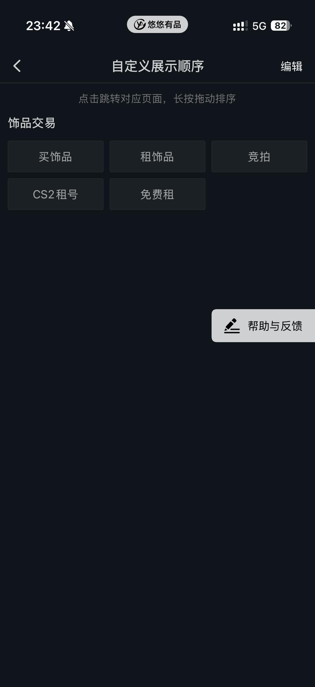
图5-1 BUFF急售竞价

图5-2 悠悠竞拍
| 维度 | BUFF急售竞价 | 悠悠竞拍 |
|---|
| 子Tab | 即将结束、热门、最新、关注 | 即将结束、热门、捡漏、最新、关注 |
| 独有功能 | 无 | 竞拍亮点（如"0.33伪双紫"）+ 捡漏Tab |
| 标签 | 高价印花、改名、特殊磨损 | 新饰品、高磨损、纪念品 |
| 信息密度 | 磨损值+标签+出价数+倒计时 | 关注数+出价数+磨损值+竞拍亮点 |
洞察：悠悠独有的"捡漏"Tab和"竞拍亮点"标注精准击中了"低价淘好货"的用户心理。"捡漏"让用户觉得"这里有便宜可以占"，"竞拍亮点"让用户快速识别高价值物品（如特殊磨损值）。这说明悠悠更懂"价格敏感型用户"的心理——这类用户在竞拍时最关心的不是饰品本身，而是"这个价格值不值"。BUFF的竞拍更偏向专业交易者，信息密度更高（磨损值、标签、倒计时一目了然），但对入门用户来说可能信息过载。
六、表现层分析 — 视觉呈现与UI设计
6.1 整体UI风格对比
BUFF采用深色主题（黑灰色背景），整体风格偏向专业工具感。首页顶部有市场行情数据（涨跌折线图、分类涨跌幅），给人一种金融交易平台的感觉。页面信息密度较高，首页同时展示行情数据、快捷入口、广告Banner、急售竞价等多个模块。
悠悠同样采用深色主题，但整体风格更偏向电商感。首页以商品列表为主体，信息密度相对较低，留白更多。首页顶部是搜索栏和快捷入口，中部是广告位（无押金租号），下部是最新上架商品列表。整体给人的感觉更轻松、更适合浏览。
UI风格分析：两者都用深色主题（这是游戏类APP的主流选择，因为CS2本身是暗色调游戏），但信息密度差异明显。BUFF的首页像一个信息仪表盘，同时展示行情、广告、商品、竞拍等多个模块，适合需要快速获取信息的专业用户。悠悠的首页像一个电商首页，以商品列表为主体，适合随意浏览的入门用户。这种信息密度的差异本质上是两者对用户行为的不同判断：BUFF认为用户来是为了交易（需要高效获取信息），悠悠认为用户来是为了逛（需要舒适的浏览体验）。
6.2 关键页面视觉对比
首页对比
首页视觉差异：BUFF首页顶部是导航栏（17个分类），下方是市场行情数据（整体趋势、热门分类涨跌），再下方是急售竞价、推荐等版块。视觉重心在行情数据上，传达专业感。悠悠首页顶部是导航栏（5个分类），下方是搜索栏和快捷入口（匕首市场、手套市场等），再下方是广告位和商品列表。视觉重心在商品列表上，传达丰富的商品供给感。
竞拍页面对比
图6-4 悠悠竞拍
竞拍页视觉差异：BUFF的竞拍页面信息密度更高——每个商品卡片展示了磨损值（精确到小数点后多位）、特殊标签（高价印花、改名、4%SP）、出价人数、倒计时。这种设计适合专业交易者快速筛选。悠悠的竞拍页面信息更简洁——展示关注数、出价数、磨损值，以及独有的"竞拍亮点"标签（如"0.33伪双紫"）。这种设计适合入门用户快速判断"值不值得竞拍"。
个人中心对比
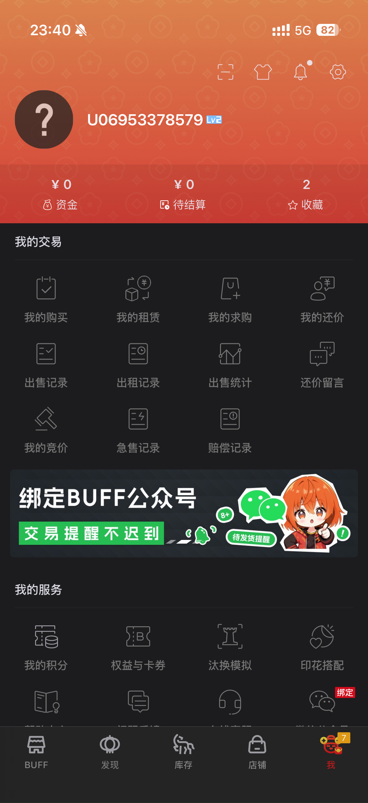
图6-5 BUFF个人中心
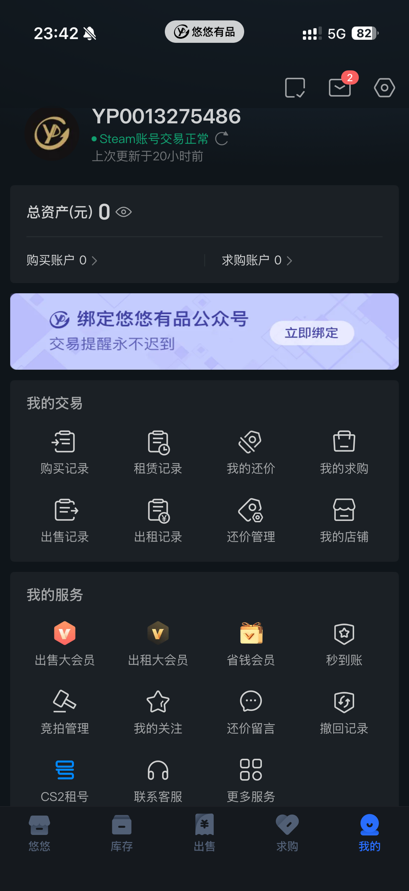
图6-6 悠悠个人中心
个人中心差异：BUFF的个人中心以橙色渐变为背景，视觉冲击力强，重点突出资金、待结算、收藏三个核心数据。悠悠的个人中心以深色为背景，UI设计更加精美，重点突出三个增值服务功能。BUFF的设计更克制，引导用户关注核心指标；悠悠的设计更全面，让用户看到平台提供的所有服务。
七、SWOT分析与迭代建议
7.1 悠悠有品 SWOT
| 优势（S） | 劣势（W） |
|---|
| 租赁生态完整；免费租拉新效果好；秒到账提升卖家粘性；3套会员精准匹配；竞拍"捡漏"和"亮点"功能贴心；过户提供退出机制 | App评分极低（小米1.1分）；无社区生态，用户"用完即走"；工具功能薄弱；品牌信任度远低于BUFF；卖家支付方式不展示；安装包偏大 |
| 机会（O） | 威胁（T） |
|---|
| 租赁市场增长空间大；CS2租号是差异化蓝海；手续费优势可扩大卖家规模 | BUFF正在补强租赁功能；口碑问题影响新用户转化；大厂资源碾压 |
7.2 迭代建议（短/中/长期）
方向一：修复口碑，止住失血（短期）
悠悠最大风险不是竞品，而是自己的口碑。小米1.1分意味着每个新用户下载前就看到差评，转化率大打折扣。
行动：
- 优先修复高频吐槽问题：App崩溃、验证码收不到、出租/出售界面混淆
- 在应用商店积极回复差评，展示改进态度
- 设立"体验改进专项"，每月公开改进进度
- 在商品详情页增加卖家支付方式展示（对齐BUFF）
方向二：深耕租赁体验，建立不可替代性（中期）
行动：
- 优化租赁流程：减少押金纠纷、提升发货速度、完善归还体验
- 强化CS2租号功能——这是BUFF完全没有的差异化蓝海
- 建立"租赁→购买"转化路径：租过的饰品提供购买折扣
- 竞拍页面保留"捡漏"和"竞拍亮点"优势，持续强化
方向三：补齐社区短板，提升用户粘性（长期）
行动：
- 先做"租赁晒单"——让用户分享租到的饰品搭配（轻量级社区）
- 做"CS2租号体验分享"——让用户晒租号体验，形成口碑传播
- 与CS2赛事内容合作，蹭赛事热度提升品牌曝光
- 考虑引入轻量级行情数据，吸引投资型用户，增加买卖交易量
八、总结与展望
网易BUFF和悠悠有品代表了CS2饰品市场的两种产品路径。BUFF选择了"交易市场+工具生态+社区内容"的道路，通过大厂资源和数据积累建立了强大的竞争壁垒。悠悠选择了"租赁服务+低门槛体验+资金管理"的道路，通过差异化的租赁生态和缩短卖家资金流转周期的策略快速获取用户。
两者的核心差异：
- BUFF = "证券交易所"模式：专业交易市场，服务于对磨损值敏感的专业交易者，首页一对一展示具体卖家链接，信息精确到磨损值，有社区生态和行情数据，靠交易抽佣和会员变现
- 悠悠 = "共享经济"模式：低门槛体验市场，服务于价格敏感的入门级用户，首页一对多展示饰品集合只显示底价，有免费租和CS2租号，靠租赁服务费和会员变现
展望未来，CS2饰品市场仍处于增长期（当前市值较历史最高下跌18.3%，存在反弹空间）。对于悠悠有品而言，当务之急是修复口碑、深耕租赁体验、逐步补齐社区短板。谁能更好地平衡"用户体验"与"商业变现"，谁就能在这个日均交易额超1亿的市场中占据更有利的位置。
— 报告完 —